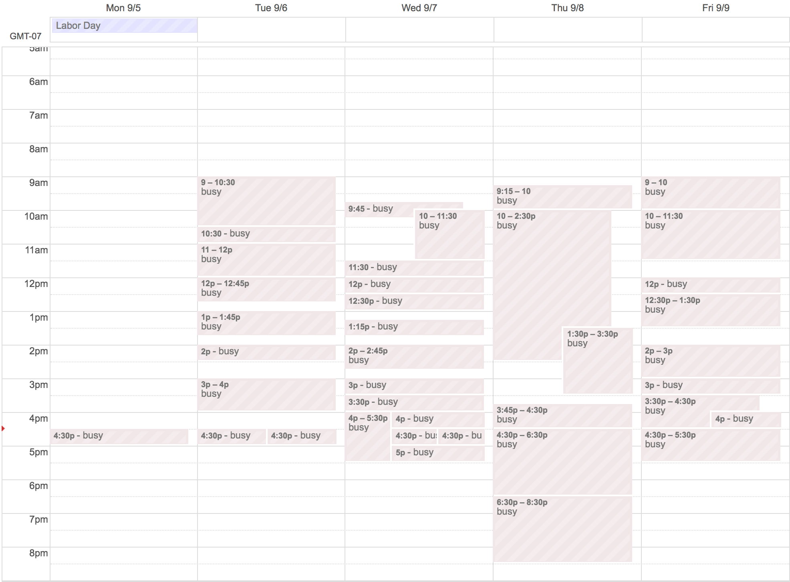

Emotional Valence
 |
|---|
| Time spent at work with coworkers. Do you spend that much time with your loved ones? |
Work relationships aren’t all that different from family relationships. For a team of engineers, it can actually be more intense than dealing with a significant other. We spend a few hours a day talking to each other and sharing emotional conversations about the work we care deeply about. Surely, after having worked in such an environment for a few years, I’d know at least, that I would be seeing the people at work as people I’m having a close relationship with, right?
It was only yesterday that I realized that I wasn’t seeing it that way.
Only yesterday that I surprised myself at what I said. We were having our regular daily reflections scheduled for about fifteen minutes each day. During these meetings, we’d talk about how we felt about the day, the tasks we were able to / unable to complete, and what we can do better for the day after. I started this meeting with a neutral sentiment because even though we got all the things done, I felt that it wasn’t done as efficiently as it could have been done. Kaizen. It was only just me and the other engineer that were officially “in” the meeting. The manager/designer used to attend, but he stopped, citing that he wanted to devote his attention to external growth of the product – fair enough.
About ten minutes into our fifteen minutes of scheduled session, the manager overheard our conversation and commented about how we don’t want to turn our attention into improvements for the sake of improvements. It wasn’t out of the norm for an open office configuration with the portal to involve non-participants on a whim, so I thought it was fair for him to chime in. But as the conversation continued, he asserted that we shouldn’t be so focused on what we’re missing out on, and that it was ok to just be content with the work day completed. That’s when my cognitive dissonance kicked in, and my defenses up. No problem is a problem; what he said is totally wrong.
I could have explained at that time, digging deeper into the truth of the matter, that ceasing improvement efforts are an admittance of complacency, and that it’s the same as pretending that we’re perfect. But I took an orthogonal route in the discussion because I didn’t want to spend their 6pm at work in a philosophy lesson. I said, instead:
I can see that improvements for their own sake isn’t good, and that we should be focused on the goal. But we just said yesterday that we’d be cutting these meetings down to 15 minutes. If you think that’s too long, we can cut it down to 3 minutes or 5 minutes. And this our meeting between me and the other engineer. If you wanted to have a say, you’d come to these meetings and it’ll be all of our concern, and you can have your say.
Then there was an uncomfortable silence for two whole seconds. The meeting promptly ended, and a farewell until tomorrow.
That night, I became uncomfortable with what I said. I knew I was right, and darn it, I was tell the truth as I saw it. Why should anyone come into a meeting that they volunteered out of, and tell us how to run the meetings? F authority - it’s none of their business, I thought. If I get fired, I’ll at least have a story to tell, and a lesson learned.
Today, I had a one-on-one with the same manager that I told off. Knowing that I can take it as straight as I give it, he taught me the words “Emotional Valence”. While it is important that I’m clear and concise; honest and transparent with my speech, it’s not enough. When sharing thoughts, there’s a balance of forces at play. If I only said the truth, regardless of how much it hurts, then it would quickly deteriorate the relationship and line of communication. It’s a simple matter of framing that dictates whether a message is positive or negative.
I wish to say what is true as clear as can be. Usually, that involves finding the right words that captures the essence of the matter. It doesn’t take positivity into account. If I beat around the bush, that is inefficient. If I cover it with nice words and potentially awesome results, then it’ll be sugar-coating the message. But there’s a balance. There’s the right thing to say, and the wrong way to say it. By spinning the message and using positive words instead of negative ones, I can say what means the same, but without the negativity. That way, I can say what is true, while sustaining the relationship.

I give credit to The Seven Principles for Making Marriage Work, a book I read many years ago. It describes that to predict whether a relationship would continue to work is based on the ratio between positive interactions and negative interactions. That ratio should be no more than 1 negative messages for every 5. When the manager brought this up at the one-on-one, I immediately saw my failings. I was too focused on the subject of the conversation, that I neglected its recipient.
Reflection time. Here’s how I’d re-say what I said in that fateful meeting if I had the time to think about it, knowing what I know today.
Thanks for chiming into our conversation, we weren’t really paying attention to how effective these meetings could be. I didn’t realize that our end-of-day meetings could feel like we’re looking for problems that aren’t there to begin with. I think it’s coming from the same place of concern that got us to cut these down to 15 minutes instead of half hour. I do respect [the other engineer]’s time, and I think it’s really helping. Having said that, I feel that if these are being less effective for their time, then it’ll be something that we’d talk about in one of these meetings. I wish we could talk about it today, but then we’d run out of time. So, I think it’d be a great idea for you to join us tomorrow, and see how we improve there. If not tomorrow, same time every day. Does that sound ok?